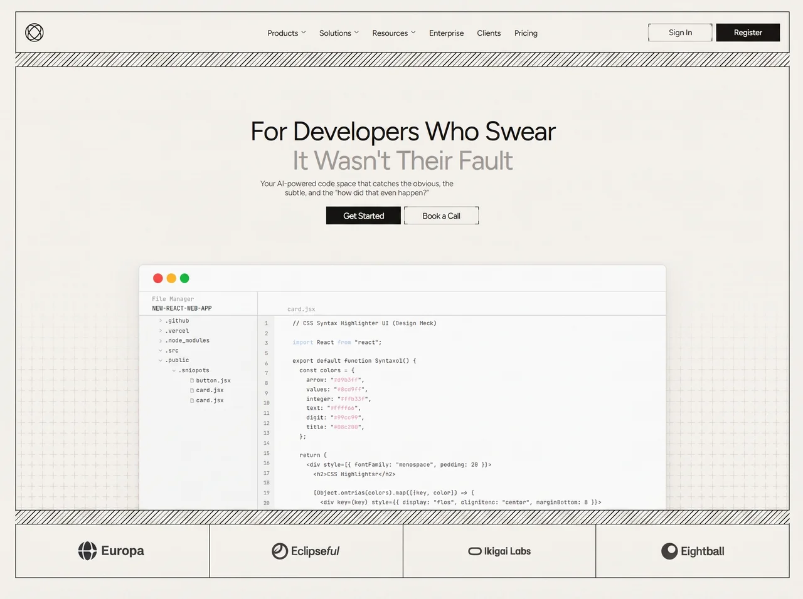

Codeveil
Developerdeveloperyilai-ai 公开页面
收录时间：2026-09-04正文：11,566 字符

本地预览图 · webp
完整提示词
Build a single standalone index.html (inline CSS + JS, no framework, no extra files) that is a pixel-faithful reproduction of an editorial developer-product landing page. Output only that file.
There is no video and no <video> element. Do not invent a CloudFront .mp4. The “editor preview” is a live HTML/CSS mock, not a recording.
Fonts
Load from Google Fonts (or @font-face):
Figtree, weight 400 (variable 300–700 OK). Display, nav, buttons, body. Hierarchy is size + color, not weight. Fallback: 'Helvetica Neue', Helvetica, Arial, system-ui, sans-serif.
JetBrains Mono, 400 (500 OK). Editor mock only. Fallback: ui-monospace, SFMono-Regular, Menlo, Consolas, monospace.
font-display: block. Antialiased. font-synthesis-weight: none.
Viewport scale (critical)
Reference canvas: 1440 × 1056. Every layout token is in rem where 1rem = 1 reference pixel.
html { font-size: clamp(0.72px, 0.069444vw, 1.30px); } /* 100vw/1440 */
At 1440px, 1rem === 1px. Wider viewports scale up (cap 1.30px); narrower scale down until the clamp floor. Do not change this formula.
Palette (:root)
--bg: #efede8 page ground
--panel: #f2f0eb frame fill
--rule: #26261f charcoal hairlines
--hair: #bdb9ae ghost-button light border
--ink: #1a1a17 primary text
--ink-solid: #131311 solid buttons
--on-dark: #f4f2ed labels on solid
--body: #4e4e47 subtitle
--muted: #9e9e98 second headline line
--chev: #57574f nav chevrons
--plus: #d6d0c3 plus-grid
Hairline: --hairline: max(1px, 1rem)
Ghost crop-mark arm: --bracket: 6rem
Type (desktop, at 1440)
Display h1: 48rem, tracking -0.030em, line-height 1.10, weight 400
Sub: 13.7rem with floor max(12.5px, …), tracking -0.020em, lh 1.22
Nav/header buttons: 14rem with floor max(11px, …) / max(10.5px, …), tracking -0.015em
Hero CTAs: 15rem with floor max(11px, …), tracking -0.040em
Nav color #1b1b18
Page chrome
body: flex, min-height: 100dvh, padding 24rem 28rem 23rem, bg --bg, color --ink.
.frame: flex column, height: calc(100dvh - pad-t - pad-b), min-height: min-content, overflow hidden, --panel, top + bottom hairline --rule. Side rules live on .header, .hero, .strip only — they intentionally break across hatch bands.
Vertical stack inside .frame:
Header (73rem tall)
Hatch band (25rem)
Hero (flex grow, clips editor)
Hatch band (25rem)
Customer strip (94rem)
Header (73rem, pad 0 16rem, gap 20rem, bottom hairline)
Brand left: 34×34 SVG, viewBox="0 0 40 40": circle cx=20 cy=20 r=18.5 stroke #1a1a17 width 1.9; two ellipses rx=9.4 ry=18.1 rotated −40° and +40° around 20,20. Same stroke. Link #, aria-label Home.
Nav absolutely centered (left/top 50%, translate(-50%,-50%)), flex, gap 24rem, nowrap:
Products, Solutions, Resources — each with 10×6 chevron SVG path M1 1.2 5 4.9 9 1.2, stroke currentColor, width 1.25, round caps. Chevron 9×6, color --chev, gap 5rem after label.
Enterprise, Clients, Pricing — no chevron.
Hover: opacity .55 over .18s ease. Links #.
Actions right (margin-left: auto), gap 6rem:
Ghost Sign In
Solid Register
Burger (hidden until ≤1040px)
Buttons
Shared: inline-flex, height 32rem, min-width 115rem, pad 0 16rem, radius 0, no inherited border on solid.
Solid: bg --ink-solid, color --on-dark; hover #2c2c27.
Ghost: border --hairline --hair, transparent fill. Crop-mark corners via ::before inset -1 * hairline. Prefer one bordered box masked with two orthogonal linear-gradient masks (mask-composite: intersect / -webkit-mask-composite: source-in) so all eight arms are identical; fallback: eight charcoal strips of length --bracket and thickness --hairline at the four corners. Hover: rgba(26,26,23,.045).
Hero CTAs: height 32rem, min-width 133rem, pad 0 18rem.
Hatch
Height 25rem, bottom hairline. Repeating −45° stripes: --rule 0–1.25rem, transparent 1.25–6.25rem (pitch 6.25rem). Same --panel fill. Two identical hatches: under header and under hero.
Hero
Flex column, centered, bottom hairline, isolation: isolate.
Plus texture on ::before (z 0, pointer-events none, opacity .85): SVG 19×19 plus, stroke #d6d0c3, size 19rem. Mask so it fades in only in the lower half:
linear-gradient(180deg, transparent 0%, transparent 46%, rgba(0,0,0,.32) 60%, rgba(0,0,0,.78) 74%, #000 86%, #000 100%)
Vertical rhythm (hero is a flex column; leftover height shared in this ratio):
.lead flex 14.8 0 0, min-height 40rem (empty spacer)
.copy intrinsic
.gutter flex 10.8 0 0, min-height 26rem
.stage flex 74.4 1 0, min-height 0, overflow hidden, align flex-end, justify center
.copy: pad 0 26rem, text-align center.
Headline (exact two lines):
For Developers Who Swear
It Wasn’t Their Fault
Line 1 ink; line 2 class dim → --muted. Wrap each line: .ln > .ln-i. .ln is display:block; overflow:hidden; padding: 0 .14em .2em; margin: 0 -.14em -.2em (descender room without changing box).
Subtitle (exact):
Your AI-powered code space that catches the obvious, the subtle, and the “how did that even happen?”
max-width: 27.9365em so it stays two lines. Margin-top 6rem. Color --body.
CTAs: margin-top 16rem, gap 6rem. Solid Get Started, ghost Book a Call. Links #.
Editor preview (HTML/CSS mock — not video, not an image)
.editor width 68.2% of hero, aspect-ratio: 942 / 439.4, container-type: inline-size, --e: calc(100cqw / 942), --adv: calc(5.96 * var(--e)), --px: max(0.5px, 1*e). White-ish #f7f7f7, border #e3e0da hairline, no bottom border, radius 7rem 7rem 0 0, overflow hidden. Shadow: 0 2rem 10rem rgba(30,28,22,.05), 0 14rem 44rem rgba(30,28,22,.07). Anchored to bottom of .stage; hero overflow clips it.
Chrome height 48.6e, bottom border #e3e3e3, pad-left 24.8e, gap 7.1e. Three dots 16.8e circles: #ee5d4f, #fbb63c, #23c23e.
Head height 41.8e, bottom #d2d2d2. Left pane width 212.7e, right border #d8d8d8, pad-left 23e, pad-top 5.5e:
Eyebrow File Manager — 9.9e, lh 15.6e, #a6a6a6, tracking 0.30e
Project NEW-REACT-WEB-APP — 11.2e, lh 15.6e, #343434, tracking -0.47e Right: pad-left 52.8e, align flex-end; tab card.jsx 9.9e, #ababab, tracking 0.25e, pad-bottom 3.85e.
Body remaining height 100% - 90.4e, three columns.
Tree width 212.7e, bg #f3f3f3. Rows height 17.89e, font 9.93e, tracking 0.19e, #454545.
l1 pad-left 33.90e: .github, .vercel, .node_modules — right chevron; .src, .public — down chevron
l2 pad-left 57.80e: .snippets — down chevron
files pad-left 90e: button.jsx, card.jsx, card.jsx (duplicate filename as in the reference)
Folder icon: lucide-style folder+tab stroke #9a9a9a width ~1.85. File icon: document with folded corner. Chevrons #979797.
Line numbers width 29.8e, bg #ededed, font 9.0e, lh 17.888e, #8e8e8e, centered, pad-top 5.66e. Numbers: 1, 2, 3, 5, 6, 7, 8, 9, 10, 11, 12, 13, 14, 15, 16, 17, 18, 19, 20, 21 (skip 4).
Code <pre class="ed-code">, inherit mono, pad 6e 0 0 32.1e, font 9.93e, lh 16.885e, tracking 0.19e, #454545, white-space: pre, tab-size: 2. Empty lines: .cl:empty::after { content: "\200B"; }.
Colors: .kw #b7d3ee (import); .hx #eeb0cd (hex digits inside strings); .st #565656 (strings). => in a .lig span: letter-spacing: 0, margin-right: 0.38e, contextual ligatures.
Exact listing (each line a .cl):
// CSS Syntax Highlighter UI (Design Mock)
import React from "react";
export default function SyntaxUI() {
const colors = {
arrow: "#d9b3ff",
values: "#8cd9ff",
integer: "#ffb399",
text: "#ff9966",
digit: "#99cc99",
title: "#80b380",
};
return (
<div style={{ fontFamily: "monospace", padding: 20 }}>
<h3>CSS Highlighter</h3>
{Object.entries(colors).map(([key, color]) => (
<div key={key} style={{ display: "flex", alignItems: "center", marginBottom: 8 }}>
<span style={{ width: 100 }}>{key}</span>
(Clip at the last span; remaining code is cut by overflow.) Wrap hex digits inside the quoted color strings with .hx.
Customer strip
4-column grid, height 94rem. Cells centered, pad 0 16rem. Vertical hairline between cells (not on first). Images object-fit: contain, max-height 56rem. Use these exact CloudFront URLs:
Europa — width 147rem
https://d8j0ntlcm91z4.cloudfront.net/user_38xzZboKViGWJOttwIXH07lWA1P/hf_20260826_121624_294abb76-9c42-4ec7-b0da-150a59ef6a08.png
Eclipseful — 169rem
https://d8j0ntlcm91z4.cloudfront.net/user_38xzZboKViGWJOttwIXH07lWA1P/hf_20260826_122106_32ed25ea-5ac4-4f87-9337-c99a4635cc13.png
Ikigai Labs — 202rem
https://d8j0ntlcm91z4.cloudfront.net/user_38xzZboKViGWJOttwIXH07lWA1P/hf_20260826_122106_2df1b7c0-4987-4ba7-8fae-37b6e357232f.png
Eightball — 151rem
https://d8j0ntlcm91z4.cloudfront.net/user_38xzZboKViGWJOttwIXH07lWA1P/hf_20260826_121624_affc2cfe-bb6a-430c-93b3-691ccbfbe746.png
Mobile drawer
Burger 34×34, 1px bar + two pseudo bars ±5rem. Open: X (translateY(5rem) rotate(45deg) / opposite). Drawer absolute under header, --panel, same hairlines. Links: Products…Pricing + .drawer-cta Sign In (hidden until 360px).
Breakpoints (only these)
≤1040px — switch architecture. --pad-x:22px; --pad-t:20px; --pad-b:19px; --hdr-h:60px; --hatch-h: clamp(22px,4vw,26px); --strip-h:84px. Hide .nav. Show burger 42×42. Buttons 42px; hero CTAs 48px. h1 clamp(34px, calc(22px + 2.5vw), 48px). .sub clamp(14px, 1.45vw, 16px) lh 1.42, max-width min(27.9365em, 84%). Editor 80%. Drawer .is-open { display:block }.
max-aspect-ratio: 4/5: .lead grow 36, .gutter grow 12.
min-width: 621px and max-aspect-ratio: 4/5: editor 88%.
≤780px: strip 2×2, --strip-h:112px. Even cells left hairline; rows 3–4 top hairline. Logo max-height 36px; widths 126 / 145 / 173 / 129 px.
≤470px: pads clamp; hdr 56px; strip 104px. Safe-area on body. h1 clamp(20px, calc(8.33vw - 5.16px), 34px) (keep two lines to ~300px). Sub 14px. CTAs stay side by side. Stage pad 14px. Editor width 100%, aspect-ratio: auto, align-self: stretch. Logos max-height 27px; widths 88 / 101 / 120 / 90 px.
≤360px: hide header Sign In; show .drawer-cta.
≤620px: --ed-detail: 0 (editor panes animate as groups, stagger 0).
Entrance (once, then fully static)
Head script: if not prefers-reduced-motion: reduce, add class js-anim before first paint.
Pre-state (only under .js-anim): headline .ln-i translateY(130%). Brand, nav, actions, sub, CTAs, editor also start off (opacity 0 / slight Y or scale — JS Web Animations).
--lift: 10px; --rise: 22px (1040 → 9/18; 470 → 7/14). Easing cubic-bezier(.16,1,.3,1) (expo) and (.22,.61,.24,1) (soft).
Do not animate hatches, hairlines, plus grid, or logos. Timeline (ms):
80 — brand scale(.92) → 1, 560ms soft
160 — nav items lift, +40ms each, 500ms
300 — actions lift, +60ms each
420 / 540 — headline lines unmask translateY(130%) → 0, 950ms, 120ms apart
780 — subtitle lift 620ms
920 — CTAs +70ms
1000 — editor rises --rise, 660ms
1180 — chrome dots scale .72, +45ms, 340ms
1260 — File Manager / project / tab +55ms
1360 — tree rows +38ms × --ed-detail
1440 — line numbers fade
1480 — code lines +28ms × --ed-detail
Wait for document.fonts.ready then rAF; timeout fallback 1200ms. After all finished, cancel animations, flash opacity 1 then clear so nothing stays live. No loops, no scroll observers.
Burger toggles aria-expanded + .is-open; Escape closes.
Meta
lang="en", viewport width=device-width, initial-scale=1, viewport-fit=cover, theme-color #efede8. Title: For Developers Who Swear It Wasn't Their Fault. Description: the subtitle sentence. :focus-visible 2px #1a1a17 offset 2px. Reduced motion: crush transition/animation duration.
Do not add extra sections, gradients, rounded CTAs, Inter, a video, or a footer. Match the layout, tokens, copy, CloudFront logos, editor mock, and motion exactly.把上面的提示词完整复制到支持长文本的 AI 工具中，再按需要替换品牌名、配色与文案。提示词描述的是整页结构与动效节奏，生成后建议在真实浏览器里检查首屏加载和移动端表现。
来源与版权
该条目来自公开提示词页面，原始出处信息未随页面提供。
提示词文本与预览素材的版权归原作者或原平台所有，本站仅作索引与归档。若你是权利人并希望移除本条内容，请通过联系方式告知。